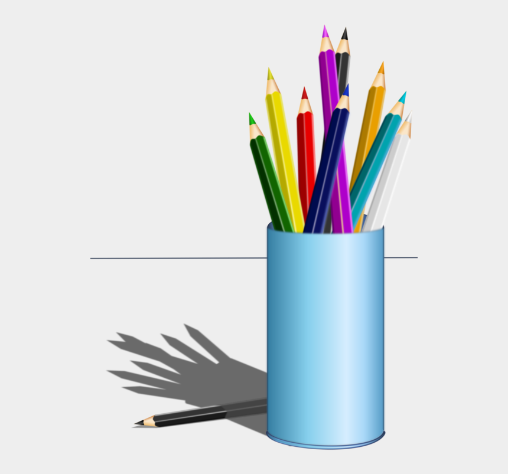

- Avoid alliteration. Always.
- Prepositions are not words to end sentences with.
- Avoid cliches like the plague. (They're old hat.)
- Employ the vernacular.
- Eschew ampersands & abbreviations, etc.
- Parenthetical remarks (however relevant) are necessary.
- It is wrong to ever split an infinitive.
- Contradictions aren't necessary.
- Foreign words and phrases are not apropos.
- One should never generalize.
- Eliminate quotations. As Ralph Waldo Emerson once said: "I hate quotations. Tell me what you know."
- Comparisons are as bad as cliches.
- Don't be redundant; don't use more words than necessary; it's highly superfluous.
- Profanity sucks.
- Be more or less specific.
- Understatement is always best.
- Exaggeration is a billion times worse than understatement.